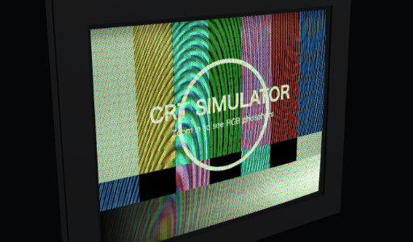
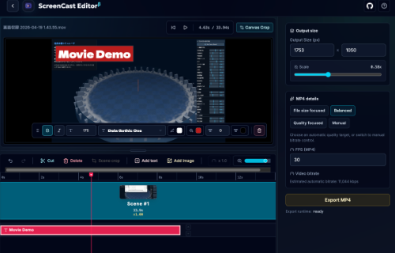

CRT Phosphor Simulator (2026)
画像や動画を読み込み、ブラウン管テレビのRGB蛍光体までズームして観察する3D/WebGL実験。
個人で作ったWebツール、可視化、PDF実験、記事を置いています。作品集というより、試したことや後から見返したいもののログです。 X

CRT Phosphor Simulator 画像や動画をRGB蛍光素子まで拡大して眺める3D/WebGL系の実験。 mozaic-app
画像・動画・カメラ入力からタイルセットを使ってモザイクアートを生成。
mozaic-app
画像・動画・カメラ入力からタイルセットを使ってモザイクアートを生成。
 Compression Leaderboard
ブラウザ内WASMで圧縮率と速度を横並びに比較するベンチマーク。
Compression Leaderboard
ブラウザ内WASMで圧縮率と速度を横並びに比較するベンチマーク。
画像や動画を読み込み、ブラウン管テレビのRGB蛍光体までズームして観察する3D/WebGL実験。

動画のカット、結合、テキストや画像のオーバーレイをブラウザ内で行うシンプルな編集ツール。
同じ入力を複数の可逆圧縮器にかけ、圧縮率・圧縮時間・展開時間をブラウザ上で比較するWASMベンチマーク。

メモを書く感覚で式や変数を並べ、行ごとの計算結果を即時に更新するリアクティブな計算機。

指を用いた遊びでCPUと対戦 をブラウザゲーム化したもの。CPUと対戦できます。
画像・動画・カメラ入力を、任意のタイルセットでモザイクアート化するブラウザツール。

画像などに軽量な注釈を重ねる、ブラウザベースの実験的アノテーションエディタ。


発表中に必要な残り時間と進行状態だけを見やすく保つ、登壇者向けの最小タイマー。

PDFをローカルで解析し、本文のMarkdown化と画像抽出を行う変換ツール。

PDFの目次をもとに、確認・抽出・分割・結合をまとめて扱うローカル動作のツールキット。

PDFのしおり構造を読み取り、章や節ごとにファイル分割するWeb版PDFUnbinder。

手書き文字をUMAPを使って2次元にマッピングしたものの可視化 し、数字ごとのクラスタや混ざり方を探索する可視化。

中国語の文章を読みながら、単語や漢字の英語訳をマウスオーバー/タップで確認する学習補助ツール。

PDFの目次をもとにファイルを章単位で分割するJavaFXデスクトップアプリ。

画像ピクセルをRGB/HSL色空間上の点群として描画し、色分布を3Dで眺めるビューア。

スライド 研究室所属時の課題で作った、音を記述して再生するScheme風の言語です。音が出ます。

rogy Advent Calendar のために書いた、関数型プログラミングで動的計画法を行う手法の紹介記事。

ConvnetJSで書きなおしたものです。素子の種類や学習器などが調整できるようになりました。 層や学習器の設定を変えながら学習の進み方を観察できるConvnetJS版。

BPNNの可視化です。Slide: HTML5によるニューラルネットワークの可視化 。BPNNの重みやノード状態を描画し、学習プロセスを追う初期の可視化実験。
WebCodecs と web-demuxer を用いてブラウザ上で動画変換を行うデモ
WebCodecs と MP4Box.js でブラウザ単体の MP4 生成を試す解説記事
JavaScriptのCompression APIを用いてZIPファイルを生成する解説記事
アスキーアート等のテーブルを解析してプレーンにするツール
画像をブラウン管テレビ風（CRT）に加工する WebGL エフェクト
JPEG圧縮を繰り返してガビガビ質感を作るツール
画像をドラッグ&ドロップで並べ替えて PDF 化するツール
ナワトル語の長音記号入力を補助するテキストエディタ
safetensors ファイルのメタデータを表示するビューア
Pyodide 上で Jinja2 テンプレートをブラウザ実行するレンダラー